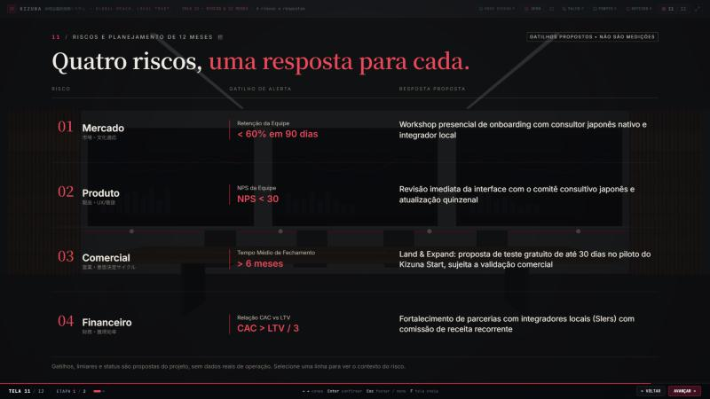
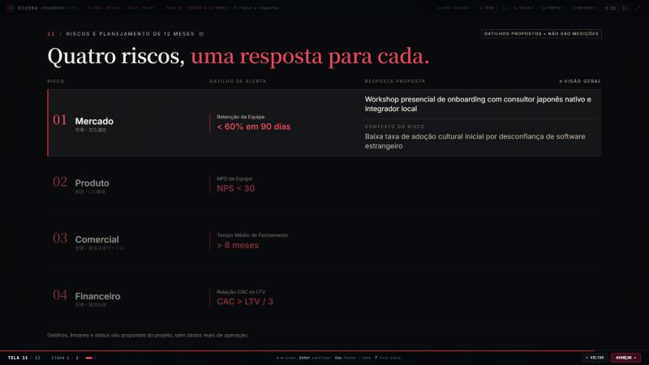
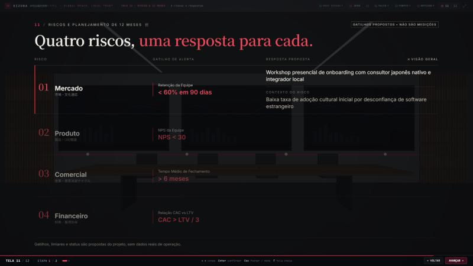
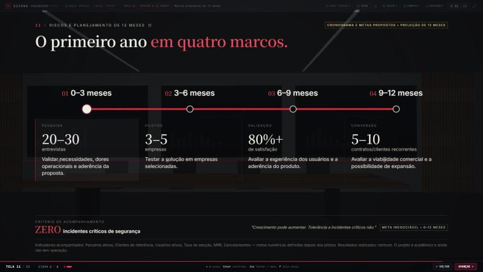
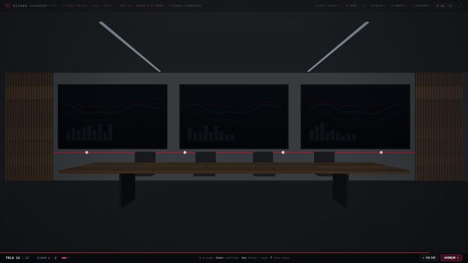
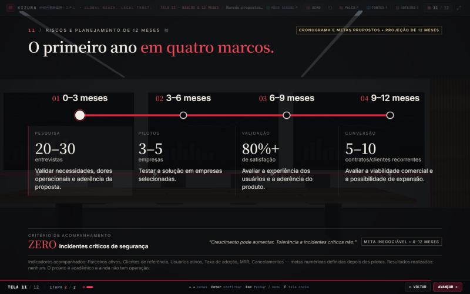
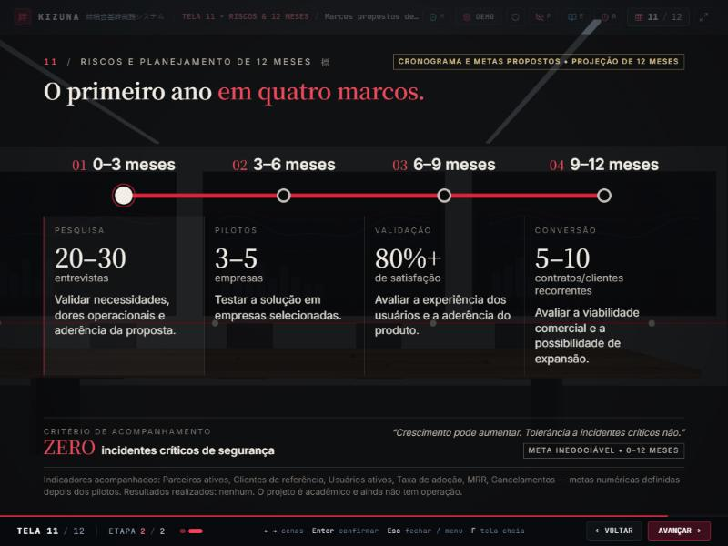
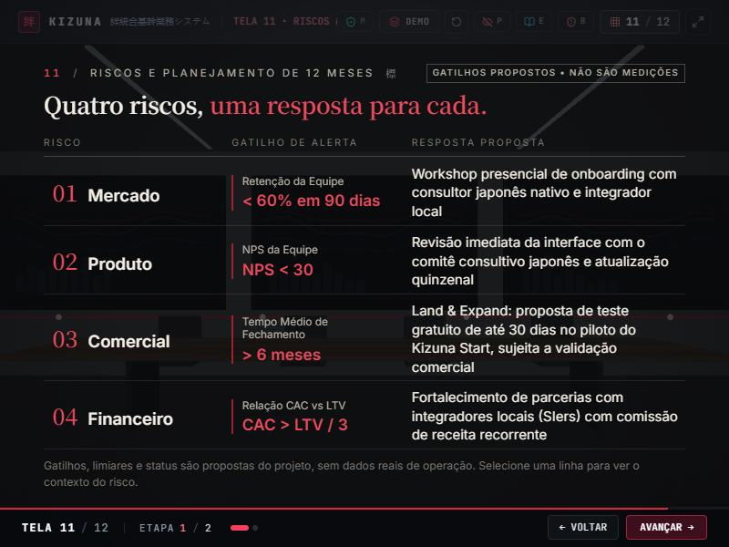
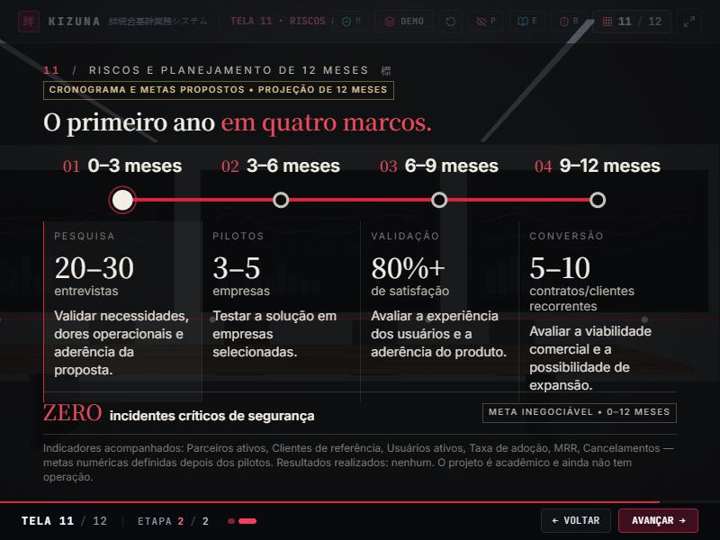

Etapa 9 • Tela 11 — centro de planejamento e controle estratégico
Antes: matriz e roadmap sobre fundo escuro com estrelas. Depois: sala de estratégia corporativa com paredes de concreto, mesa longa de madeira escura, ripas de madeira e luz fria; na parede do fundo, três painéis de vidro escuro com gráficos abstratos (sem números nem texto) e uma linha vermelha fina que ecoa o roadmap. Na 11.2 a câmera desliza um pouco em direção à parede, mantendo o ambiente. O componente da tela 11 não foi alterado. Capturas em 1920 × 1080, salvo indicação.
11.1 • Matriz de riscos


11.1 • Linha expandida


11.2 • Roadmap de 12 meses


Cenário e outras resoluções




